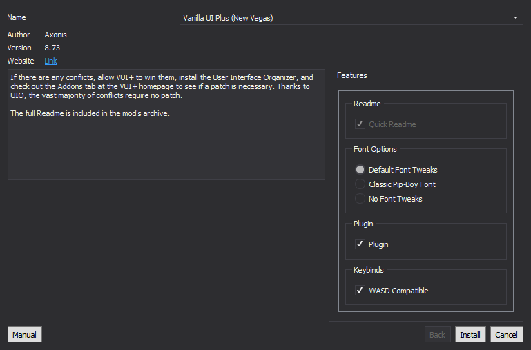

- Right-click anywhere in the left pane of MO2 and select Create Separator
- Name the separator HUD + UI
Installation instructions:
- Main File - UIO - User Interface Organizer 2.0.9
- Automatically ensures that multiple HUD extensions work together
Installation instructions:
- Main File - The Mod Configuration Menu 1.5
- Update File - MCM BugFix 2
- Allows select mods to be configured via a single in-game menu
Installation instructions:
- Main File - JIP Improved Recipe Menu 1.20
- Optimizes the crafting menu to be less of a pain to use
Installation instructions:
- Main File - Simple DLC Delay 2.1
- Delays DLC pop-ups until you meet the level requirements or discover the entrances to the DLC areas
Installation instructions:
- Press the red Download Now! button to download the mod and begin the installation normally through MO2
- You will be prompted with a FOMOD installer, in which you should select the following options:

- Greatly improves and fixes the UI while staying true to the vanilla
Installation instructions:
- Download the Main File - Vanilla Hud Cleaned 0.381 and begin the installation normally through MO2
- You will be prompted with a FOMOD installer, in which you should select everything EXCEPT Clean Fonts for Darn then select Install
- Hand-made up-scaled/cleaned recreations of many vanilla HUD elements